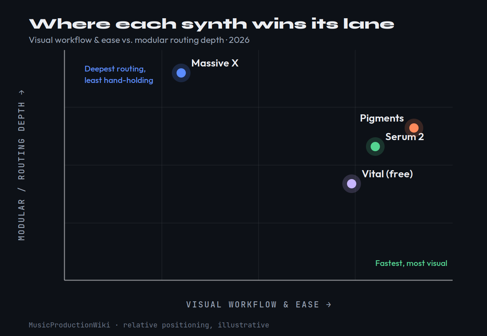
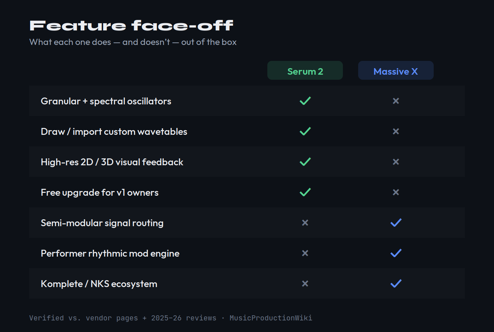
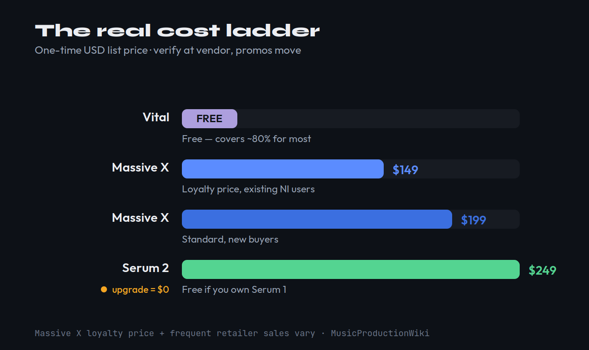

Buy Serum 2 ($249, free for Serum 1 owners) if you want the fastest, most visual sound-design workflow, multi-engine oscillators (wavetable, granular, spectral and sample under one roof), the deepest custom-waveform editor, and the largest third-party preset ecosystem in software synthesis. Buy Massive X ($199, or $149 if you already own Native Instruments gear) if you want genuinely semi-modular routing, that growling, evolving NI character, and tight Komplete integration — and you value those over visual feedback and a modern interface. For most producers the pick is Serum 2; for existing Komplete owners who route deep, Massive X earns its slot. And before you spend a cent: Vital is free and covers about 80% of what either one does.
This article contains affiliate links. If you purchase through our links, we may earn a commission at no extra cost to you. This does not affect our editorial independence — every recommendation here is based on genuine, source-checked assessment.
| Axis | Serum 2 | Massive X |
|---|---|---|
| Sound & character | 9.3 | 9.2 |
| Oscillators & engine depth | 9.5 | 8.6 |
| Filters | 8.9 | 9.0 |
| Modulation & routing | 8.8 | 9.4 |
| Visual feedback & workflow | 9.6 | 7.6 |
| CPU & performance | 8.8 | 8.0 |
| Presets & ecosystem | 9.2 | 8.9 |
| Value | 9.4 | 8.6 |
| Overall | 9.3 | 8.8 |
Scores are MPW editorial judgement, defended section by section below. Specs and prices verified June 18, 2026 against each vendor's current product page and 2025–26 reviews; figures are sourced, not first-party measured. Prices are USD list — loyalty and sale pricing move, so check the vendor before you buy.
Updated June 2026 — Serum 2 vs Massive X
Here is the problem with almost every "Serum vs Massive X" page you will find: it was written between 2020 and 2023, it compares Serum 1 to Massive X, and it treats Native Instruments as a permanent fixture of the industry. All three of those assumptions broke in the last eighteen months. Serum 2 arrived in 2025 as the first ground-up rebuild of Xfer's synth in eleven years, turning a wavetable instrument into a multi-engine one. Native Instruments filed for preliminary insolvency in January 2026 and was bought out of it by inMusic — the owner of Akai, Moog and M-Audio — only in May. And in between, the 2026 synth-shootout discourse re-opened the whole "which flagship wavetable synth should I actually buy" question. This is the re-match, judged on what is true today.
Why This Matchup Just Reopened
For most of the last decade the answer to "Serum or Massive X" was settled, and it favoured Serum. Massive X launched in 2019 to a rough reception — reviewers called the first build closer to an alpha than a finished flagship — while the original Serum had already become the default teaching tool for sound design on YouTube and the synth behind a huge share of modern bass music. Massive X matured over a string of updates, but Serum's lead in workflow and ubiquity never really closed.
Two things changed the question. First, Serum 2 (May 2025) stopped being "a better wavetable synth" and became a multi-engine instrument: each oscillator can now be wavetable, granular, spectral, sample or multisample, with a rebuilt effects section and a far deeper modulation system. Second, the company behind Massive X nearly disappeared. NI's debt — roughly £250 million against a fraction of that in annual revenue under its previous private-equity owner — pushed it into preliminary insolvency on 27 January 2026. A definitive agreement for inMusic to acquire the company was signed in early May. inMusic's public line is reassuring ("the tools you rely on today will keep working"), but the simple fact is that you are now choosing between a synth from a developer shipping major free upgrades and a synth from a brand that spent the first months of 2026 looking for a buyer. That context belongs in a purchase decision, and no 2022-era comparison can give it to you.
There is a third reason the question feels live again: the synth community spent the first half of 2026 re-litigating it in public. When MusicRadar ran its five-way soft-synth showdown in April — Serum 2 against Pigments, Phase Plant, Vital and Massive X — the threads that followed filled with producers asking the same thing: is the old Serum-versus-Massive-X wisdom still true now that Serum is a different instrument and Massive X is several years into its life? That is exactly the question that sends someone to a page like this one, and almost none of the pages currently ranking for it were written late enough to answer it honestly.

That map is the whole comparison in one picture. Massive X is the only one of the four flagship wavetable synths that trades approachability for raw routing depth; Serum 2, Pigments and Vital all sit on the fast, visual side. The honest 2026 question is not "which is better in the abstract" but "is Massive X's modular depth worth giving up Serum 2's workflow, and worth the ownership uncertainty?" The rest of this page answers that axis by axis.
What They Are: Two Different Bets
Serum 2 is a beloved core, expanded outward. The original Serum, built by Steve Duda, won not through marketing but through sound quality and an interface that made complex wavetable synthesis legible — a real-time editor where you could draw, import and morph single-cycle waveforms with a clarity nobody had matched. Serum 2 keeps that DNA and grows it: a third primary oscillator, five engine types per oscillator slot (wavetable, granular, spectral, sample and multisample), a redesigned multi-bus effects section, more macros, and a much deeper modulation rig. It still opens, behaves and sounds like Serum. Crucially, every Serum 1 owner got Serum 2 free, honouring Xfer's decade-long lifetime-updates promise.
Massive X was a from-scratch rebuild, built around routing. When NI finally shipped Massive X in 2019, it was not "Massive 2" — it was a completely new synth coded by the original Massive team, designed around a semi-modular signal path rather than a fixed chain. Its identity is the dual wavetable engine (170+ wavetables across roughly ten reading modes), a pair of phase-modulation oscillators, dual noise generators, and a routing system where you decide how oscillators, filters, insert effects and outputs connect. Where Serum says "here is a powerful fixed architecture, now go deep," Massive X says "here is a modular box, now wire it." For the conceptual gap between these two approaches and the older subtractive instruments they both descend from, our Bible entries on the oscillator and the LFO are good companions.
The lineage matters because it predicts the support you are buying into. Serum 2 comes from Steve Duda and Xfer Records — a tiny team whose entire reputation was built on one synth and a decade of honouring free updates to the people who bought it. Massive X comes from the team behind the original Massive at Native Instruments, a company that grew into the largest software-instrument brand in the world, took on heavy debt under private-equity ownership, and then spent the start of 2026 being sold. Both pedigrees are serious. But one is a developer betting its whole name on the long-term care of a single instrument; the other is a flagship sitting inside a giant catalogue now under brand-new ownership — and that difference quietly shapes which synth is the safer ten-year purchase.
Serum 2 expanded a world-class wavetable engine into granular, spectral and sample territory while keeping its precise, visual workflow. Massive X bet everything on semi-modular routing and a distinctive NI character, at the cost of approachability and visual feedback. Both can make almost any sound; each makes certain kinds of work dramatically faster than the other.
Sound & Character
Start with the blind-ear question, because it is the one that actually matters and the one most spec sheets dodge. In MusicRadar's April 2026 soft-synth showdown — which put Serum 2, Pigments, Phase Plant, Vital and Massive X head to head — Serum 2 tied with Pigments for the top sound spot, Phase Plant won on flexibility, and Vital took value. Massive X was in the room and topped no category. That is not a knock so much as a description of where it sits in 2026: a very good-sounding synth that no longer leads any single axis.
In practice the character split is real and useful. Serum 2 is clean, surgical and hard-hitting — the reason it became the bass and EDM benchmark is that its oscillators stay precise and aggressive even when you push them, and its output sits in a mix with very little fuss. Massive X has a grittier, more organic, more "alive" quality, especially on evolving or detuned material; its noise sources and oscillator effects (the Gorilla effect is a favourite) give patches a movement that Serum tends to render more cleanly. If you make dubstep-adjacent bass, growls and modulated leads, Massive X's character is a feature. If you want consistent, controllable, commercial-ready tone across genres, Serum 2's clarity wins. Score the sound a near-tie — 9.3 to 9.2, Serum 2 by a hair on sheer versatility — and reach for whichever character your music wants.
It helps to get specific about where each one shines. Drop a single saw into Serum 2, push unison toward sixteen voices with a touch of detune, and you get the wide, glassy supersaw that has defined festival leads for a decade — clean enough to sit under a vocal without masking it. Build the same stack in Massive X and it reads thicker and a little more unstable, in a way that flatters aggressive, distorted material more than polished pop. On low end the split repeats: Serum 2's precision lets you lock a sub and a mid-growl that stay mono-compatible and mix-ready, while Massive X's oscillator effects and noise routing make it the better choice when you want a reese to writhe and detune-beat against itself across a long, evolving note. Neither is objectively better — but knowing which of those textures your record actually needs tells you which synth to open first, and that is far more useful than any single overall sound score.
Oscillators & Engines
This is where the 0.9-point gap on the scorecard comes from, and it is the cleanest win on the page. Serum 2's oscillator section is no longer just wavetable: each slot can be a wavetable, granular, spectral, sample or multisample engine, so you can layer a wavetable mid, a sampled fundamental and a spectral upper-harmonic bite inside one instrument. Add 288 wavetables, the famous draw-and-import editor (Serum will even build a wavetable from a PNG), and you have the broadest, most flexible oscillator architecture in mainstream software.
Massive X is deep but narrower. You get two main wavetable oscillators with 170+ tables and around ten reading modes, two phase-modulation oscillators, and two noise sources — and the wavetable manipulation modes are genuinely class-leading; few synths bend a single table as expressively. But there is a hard limit that has not moved in years: Massive X cannot import or draw your own wavetables. Since v1.3 you can load custom noise samples, but the wavetable set is fixed. For a sound designer who lives in custom waveforms, that is the single biggest reason to choose Serum, and it is why our sound-design plugin guide still leads with Serum-family tools. If you want a primer on the FM-style techniques both synths lean on here, the FM synthesis entry covers the ground.
It is worth spelling out what the five Serum 2 engine types actually buy you, because the word "multi-engine" undersells it. The granular engine turns a loaded sample into a cloud of grains you can pitch, scatter and freeze — textures and risers a pure wavetable cannot produce. The spectral engine resynthesises audio in the frequency domain, so you reshape a source's harmonic content rather than just replay it. The sample and multisample engines let Serum behave like a basic rompler when you want a realistic layer under a synthetic one. Spread across three oscillator slots, those engines mean a single Serum 2 instance can hold a sound that used to take three separate plugins. Massive X's reply is depth in one lane rather than breadth across several: its two phase-modulation oscillators give it a real FM voice, and its roughly ten wavetable reading modes wring more motion out of a single table than almost anything else on the market — but everything it builds, it builds from the parts it ships with.

Filters
Filters are the one axis where Massive X edges ahead, and it is worth being precise about why. Massive X ships nine multimode filter types, and they have a strong reputation among practitioners for their character and their clean, low-latency behaviour — in long-running synth shootouts its filters are frequently singled out as best-in-class for that zero-latency, musical quality. There are fewer of them, but the ones you get are excellent.
Serum 2 answers with breadth: 100+ filter types (including eleven new in version 2) across two filter slots you can run in series or parallel, plus comb, formant and specialty options. The Serum filters are clean and surgical — exactly in keeping with the rest of the instrument — and the sheer count means you almost never reach for a third-party filter. So the trade is character-and-polish (Massive X) against variety-and-routing (Serum 2). It is close enough that we give Massive X the nod by a tenth — 9.0 to 8.9 — and note that most producers will be perfectly happy on either side of that line.
The practical difference shows up in how you use them. Serum 2's two filter slots can run in series — a low-pass feeding a comb for metallic, plucked tones — or in parallel, splitting a bass into a clean sub path and a distorted, resonant mid path you blend to taste; that routing alone covers sound-design jobs single-filter synths force you to bounce and re-import for. Massive X gives you one filter position in the default signal path but lets you place it anywhere in the modular grid, so its flexibility comes from the patching rather than from stacking slots. The filter characters reviewers keep singling out — the Scanner, the comb, the various low-pass flavours — are praised for exactly that musical, low-latency response. In short: reach for Serum 2 when you want two filters doing different jobs at once, and Massive X when you want one excellent filter placed exactly where your routing demands.
Modulation & Routing
If filters are Massive X's quiet win, modulation and routing are its loud one. This is the synth's reason to exist. Massive X is semi-modular: you decide how oscillators, filters, insert effects and outputs connect, you can route LFOs at audio rate and feed them to the output as oscillators, and the Performer — a per-macro rhythmic engine that drives gated, sequenced, evolving modulation — is something Serum simply does not have an equivalent for. For producers who build long, breathing, generative patches, Massive X's routing flexibility is a real and hard-to-replace strength. It scores 9.4 here for a reason.
Serum 2 is no slouch — a drag-and-drop modulation matrix, ten LFOs with Chaos and path shapes, multiple envelopes, and doubled macros make it deeply modulatable, and for most patches it is faster to set up than Massive X's wiring. But "faster to set up" is the point: Serum's modulation is powerful within a fixed architecture, while Massive X's is powerful because the architecture is open. If your idea of a great patch is one that morphs on its own for sixteen bars, Massive X gets you there with less compromise. If you want to assign an LFO to a cutoff and move on, Serum is quicker. Producers who like building these evolving textures by stacking instruments should also read our guide to layering synths.
The Performer deserves a closer look, because it is the feature most likely to make a Massive X owner forgive everything else. Each macro can be driven by a Performer — effectively a small step-sequencer-meets-envelope that you draw, with its own rate, able to gate, ramp and stutter whatever it controls. Assign Performers to filter cutoff, oscillator position and an insert effect's mix, set each to a different rate, and the patch evolves rhythmically on its own, locked to tempo, with no automation lane in sight. Serum 2's nearest equivalents — its custom-drawn LFO shapes and its Chaos modulators — are powerful and quicker to dial in, but they modulate within a fixed signal flow rather than reshaping it. For generative, ever-changing patches the Performer is the reason some producers keep Massive X installed purely as a texture machine long after Serum 2 became their main synth.
Visual Feedback & Workflow
Here the gap flips hard the other way, and it is the widest margin on the scorecard: 9.6 to 7.6. Serum 2's defining strength has always been that you can see what the synth is doing. The wavetable renders in real time in 2D and 3D, modulation shows up visually on the parameters it touches, and the whole interface is built so that a complex patch stays legible. For learning synthesis, for fast sound design, and for the simple pleasure of working without fighting the tool, nothing in this comparison comes close.
Massive X is the opposite case, and this is its most consistent criticism across every review from 2019 to 2026: the visual feedback is thin and the learning curve is steep. It is not a "drag-and-drop and go" instrument; it rewards patience and punishes anyone expecting to tweak a preset quickly. The node-based routing view helps, but you spend more time reading menus and dropdowns than watching the sound. For an experienced sound designer who has internalised the workflow, that is acceptable; for most producers, and certainly for anyone learning, it is the single biggest reason to pick Serum 2. Workflow is not a tie-breaker here — it is the headline.
Put a number on it from the buyer's seat. Loading a Serum 2 preset and reshaping it into your own sound is a five-minute job for a beginner, because every control you touch shows its effect on screen and the signal path is identical every time. The same task in Massive X starts with reading the patch — tracing which oscillators feed which filters, which macros drive which Performers — before you can safely change anything, and that reading step is where new users stall. The flip side is genuine: once you have internalised Massive X, the openness that slowed you down becomes the thing that lets you build sounds no fixed-architecture synth can. But that payoff is measured in months, not minutes, and most people buying their first or second flagship synth in 2026 will simply finish more music in Serum 2.
CPU, Stability & the Ownership Question
On raw performance, Serum 2 is the safer bet. Independent 2026 coverage reports meaningfully lower CPU on complex patches than the original Serum, and it has been stable across DAWs. Massive X carried a heavy-CPU reputation for years; the good news for 2026 is that it now runs natively on Apple Silicon (or via Rosetta 2) per Native Instruments' current specification page, so the old "Intel-only" warning some older comparisons still repeat is out of date — do not ship a stale weakness. The caveat that remains: Massive X is plugin-only, with no standalone mode, where Serum 2 is also plugin-only but lighter on heavy unison and layered patches. Both run as 64-bit VST3, AU and AAX, so they slot into Ableton, Logic, FL Studio, Studio One, Bitwig, Cubase and Pro Tools.
If raw track count is your worry, the honest test is the one only you can run: load the heaviest patch you expect to use — full unison, granular or spectral engine engaged on Serum 2, several Performers and insert effects live on Massive X — and stack instances until your specific CPU buckles. Synth load depends as much on your buffer size, sample rate and processor as on the plugin, so a number from someone else's machine tells you little. Both run their demos without that limit, so an afternoon of testing on your own session is worth more than any benchmark chart, and it costs nothing.
The less technical risk is the one that genuinely separates them in 2026: who is going to keep developing each synth. Xfer is small, independent, and has a ten-year record of free major upgrades — buying Serum 2 is buying into that track record. Massive X comes from a company that entered insolvency in January and was acquired in May; inMusic says development continues and existing licences remain valid, and there is reason to take that at face value given inMusic's keep-the-brand playbook with Akai and Moog. But a synth that last received a major rethink in 2019, from a business in transition, is a different proposition from one shipped fresh in 2025 by a developer whose whole reputation rests on long-term support. We dock Massive X to 8.0 here as much for that uncertainty as for CPU.
Price, Ecosystem & the Vital Problem
On paper Massive X is cheaper: $199 list, or $149 if you already own Native Instruments gear (NI ran a loyalty push through 2026, and the price dropped to roughly $105 during a promo that ended in August 2025). Serum 2 is $249 — note that its $189 launch price ended on 1 June 2025, so any page still quoting "$189 intro" is stale — though it is completely free for the very large number of people who already owned Serum 1, and Splice offers rent-to-own at $9.99/month for 25 months. Retailers discount both regularly, so the real-world gap is smaller than the list prices suggest.

Ecosystem is where the money question gets interesting. Serum has the largest third-party preset and sound-pack economy of any synth on earth; whatever genre you make, someone sells Serum presets for it, and that ecosystem is itself a reason to standardise on Serum. Massive X's counter is Komplete and NKS: if you own a Komplete bundle or an NKS-compatible controller, Massive X drops into a hardware-and-software workflow that Serum cannot match — and after the inMusic deal, NKS now reaches Akai and M-Audio hardware too. So the value verdict depends entirely on where you already live. For a fresh buyer with no NI investment, Serum 2's free-for-owners model and ecosystem make it the stronger value (9.4); for a deep Komplete user, Massive X at $149 is a genuinely good deal (8.6).
One practical note before the spoiler: both let you try before you commit. Serum 2 offers a demo, and the Splice rent-to-own route lets you use it in full for $9.99 a month and stop whenever you like, with payments counting toward ownership. Native Instruments runs a Massive X trial and routinely folds it into Komplete sale events where the effective price drops well below list. Neither company is asking you to buy blind — which makes the "audition both in your own DAW, on your own hardware" advice not just sensible but easy to actually follow.
And then there is the spoiler we promised to name honestly, because the brand is built on honesty: Vital is free, and for a beginner it covers roughly 80% of what either of these does. A fully featured free tier, three oscillators, two filters, a complete modulation matrix and a superb visual workflow — the only paid Vital tiers ($25 and $80) add content, not capability. If you are new, the right move is to learn synthesis in Vital first, then buy Serum 2 or Massive X when you can name the specific thing Vital can't do for you. Our Serum 2 vs Vital and Serum vs Vital comparisons make that case in full, and the best synth plugins roundup puts all of these in context.
Who Should Buy Which
Strip away the spec tables and the decision is straightforward. Buy Serum 2 if you are most producers reading this: you want the fastest, most visual workflow, multi-engine oscillators, custom wavetables, the biggest preset ecosystem, and a developer with a long record of free upgrades. It is free if you already own Serum 1, and the obvious pick for anyone making bass-forward electronic music or commercial sound-pack work — see the best EDM plugins guide for where it fits a typical chain.
Buy Massive X if you specifically want semi-modular routing, the Performer's evolving rhythmic modulation, that gritty NI character, and tight Komplete/NKS integration — and you already own NI gear, so the $149 loyalty price applies and the ecosystem pays off. It is a connoisseur's pick in 2026: deep where it is deep, but asking you to accept weaker visual feedback, a steeper curve, a 2019 feature set, and a company mid-transition. Buy neither yet if you are a beginner — start in free Vital, level up, and come back to this page when you can articulate exactly why you've outgrown it. For the full original-Massive backstory and how the line got here, our Massive review and the Serum 2 vs Pigments comparison are the natural next reads.
And if the budget genuinely allows, owning both is not extravagant — it is how plenty of working producers actually operate. Serum 2 becomes the everyday workhorse you reach for first; Massive X stays installed as the specialist you open when a track needs something to crawl and evolve on its own. They overlap less than the spec sheets imply, because the thing each does best is the thing the other does only adequately. For most readers that is a next-year decision rather than a today one — but it is worth knowing the two are complements, not strictly either/or.
Spec Sheet, Side by Side
| Spec | Serum 2 | Massive X |
|---|---|---|
| Released | 2025 (rebuild) | 2019 (rebuild) |
| Oscillator engines | Wavetable, granular, spectral, sample, multisample | Dual wavetable + 2 phase-mod + 2 noise |
| Wavetables | 288 (plus draw/import) | 170+ (no import) |
| Filters | 100+ types, dual slots | 9 multimode types |
| Routing | Fixed architecture, mod matrix | Semi-modular, user-defined |
| Visual feedback | Real-time 2D/3D, high | Limited; node view |
| Standalone | No (plugin only) | No (plugin only) |
| Apple Silicon | Native | Native or Rosetta 2 |
| Formats | VST3, AU, AAX | VST, VST3, AU, AAX |
| Developer (2026) | Xfer (independent) | NI (now inMusic-owned) |
| Price | $249 (free for Serum 1 owners) | $199 / $149 loyalty |
Specs and prices verified June 18, 2026 against Xfer Records and Native Instruments product pages and 2025–26 reviews. Prices are USD list; loyalty, intro and sale pricing vary — confirm at the vendor before purchase.
Practical Exercises
The fastest way to feel the difference between these two is to build with them. Work through these three graded exercises in whichever you own — or in both demos — and the philosophy gap stops being abstract.
- In Serum 2, load a single wavetable oscillator, pick an aggressive table, add a little unison, and drop a low-pass filter with an LFO on the cutoff.
- In Massive X, recreate it: one wavetable oscillator, pick a comparable table and mode, route an LFO to a filter through the wiring section.
- A/B the two. Notice how much faster Serum's visual editor gets you to a usable patch, and how different the raw character of the two oscillators is before you've added a single effect.
- In Massive X, set up an evolving pad: route a Performer to a filter cutoff for rhythmic movement, send an audio-rate LFO into an oscillator for grit, and run two insert effects in parallel.
- Now try to approximate that same self-evolving patch in Serum 2 using its mod matrix, Chaos LFOs and dual filters.
- Note exactly where Serum makes you compromise — the per-step rhythmic modulation is the part that is hardest to match. This is what Massive X's semi-modular routing buys you.
- In Serum 2, build one bass from three engine types at once: a wavetable mid, a sampled or multisample fundamental, and the spectral engine for upper-harmonic bite, routed through both filters in series.
- Import a custom wavetable drawn from a short audio clip and assign a macro to morph it.
- Try to reproduce the result in Massive X — and discover where its fixed wavetable set and lack of granular/spectral engines stop you. This exercise demonstrates, rather than asserts, the oscillator gap.